Overview
Syllabus
Syllabus
Lecture: Tue & Thur 2:00pm - 3:15pm, FPAT 253.
Office Hours: TBD
Text: Notes +Modern Robotics+ Robot Modeling and Control
Workload: 2.5 hours of lecture, 8 hours of reading notes, papers, and writing simulation code per week.
Course announcements: I use canvas to send information, but don’t read inbox messages. Contacting me by email with [ME 676 RMC]: or [AER 676 RMC]: makes it easy for me to track and respond to your emails.
Course website: All course material will be available on the website, which will be updated as the course proceeds.
Syllabus
Academic Integrity
Accommodations due to disability
Attendance Policy
Classroom Conduct
Excused Absences & Verification of Absences
Exams: None.
Homework: Intermittent assignments, must adhere to rules in syllabus
Grading: See Syllabus. Subject to change.
Course Overview
Learning Goal
For you to be able to read and assimilate both recent papers and early foundational papers on robotics. Furthermore, develop programming skills that enable you to implement and try (possibly new) methods in simulation.
Course Overview
Learning Goals:
Understand coordinates and robot configurations.
Understand how to transform the robot configuration into task coordinates and vice versa, along with the challenges in these processes.
Learn approaches to planning motions in both task coordinates and robot configurations.
Learn approaches to achieving planned motions using feedback control.
Understand the challenges of state estimation.
Learn optimization-based approaches to planning and control.
Understand contact modeling and control challenges.
Simulate robotic systems and test control algorithms.
Course Overview
Approaches for achieving goals:
Lecture/Discussion on
Coordinates
Dynamical Systems: single and articulated rigid bodies
Planning Trajectories
Sensing and State Estimation
Feedback Control
Research article discussions
Practice through assignments (code and question) and Course Project
Grades
| Name | Weight | Due (Tentative) |
|---|---|---|
| Assignment 1 | 20% | Week 3 |
| Assignment 2 | 20% | Week 6 |
| Research Article Discussions | 10% | Weeks 7 -10 |
| Project Proposal | 10% | Week 11 |
| Assignment 3 | 20% | Week 12 |
| Project Presentation | 20% | Week 15 |
Expectations
You are reviewing notes and slides.
Comfort with mathematics:
Abstract definitions.
Imagining concrete examples to which they apply.
Applying definitions to complete derivations and proofs.
Comfort with code:
How to use documentation describing installation and use of packages.
Awareness of the need to test code frequently tests will need testing.
Study groups. Don’t go this one alone.
About Me
Grew up in India (early childhood in England)
Undergraduate degree in Mech. Engg. in India
Masters in Mech. Engg focusing on Mechatronics
Ph.D in Electrical Engg. from UT Dallas: Legged Robots -> Graph Theory + Multi-robot coordination + Quadrotors
PostDoc at UT Austin: Stability Analysis of Classifier-in-the-Loop Systems
Research
Goal: Get mechanical robots to control themselves.
Inspiration
About You
On an index card / sheet of paper, write down:
Name
First robot you were aware of and/or Favorite robot
Motivation for taking this course
Concerns about the course
Topics you wish were on the syllabus
Topics you have already studied
Learning/teaching styles that you feel work well for you
Motivation
Motivation

Motivation
Motivation

Motivation
Motivation
Exercise
Sketch a diagram describing your guess for the underlying system architecture that achieves these kinds of behaviors
What’s Left?
- Touch feedback
- Human-Robot Interaction
- Safety
- Reliability
- Energetic Efficiency
Previous: Will the prototype work?
Now: Will this be a viable commercial product?
My Research
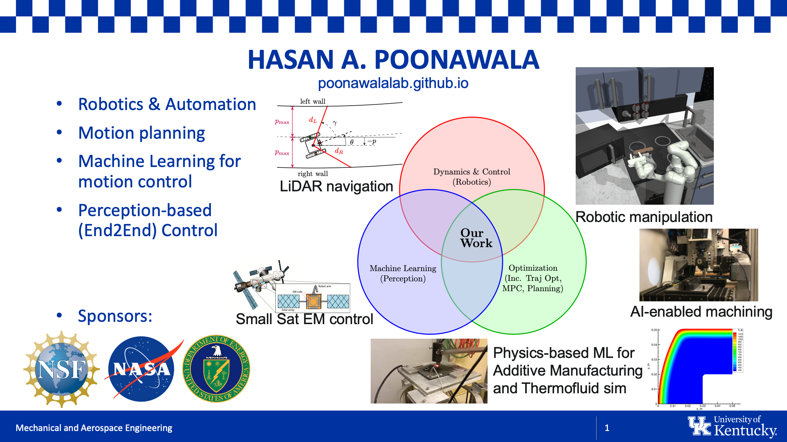
Goal
Goal: Get mechanical robots to control themselves.
Day-to-day:
- Theory from dynamics and control systems,
- Algorithm development: optimization
- Simulations/experiments
Navigation using Deep Learning
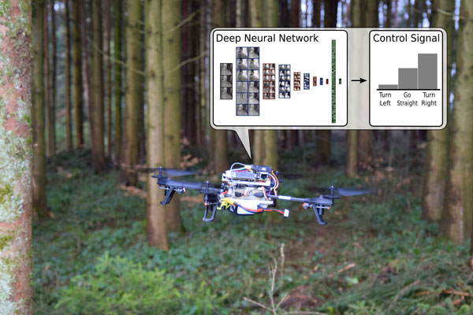
End-to-end Neural Net Control
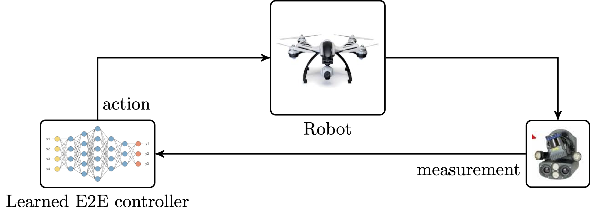
Navigation using Machine Learning
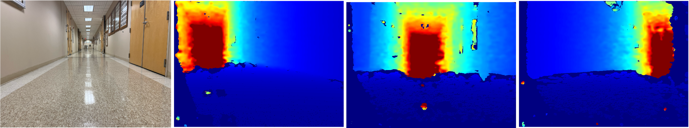
- Simple linear controller MB size
- Based on the Support Vector Machine
- Guaranteed to navigate hallway without crashing
Results
Guaranteed Collision Avoidance
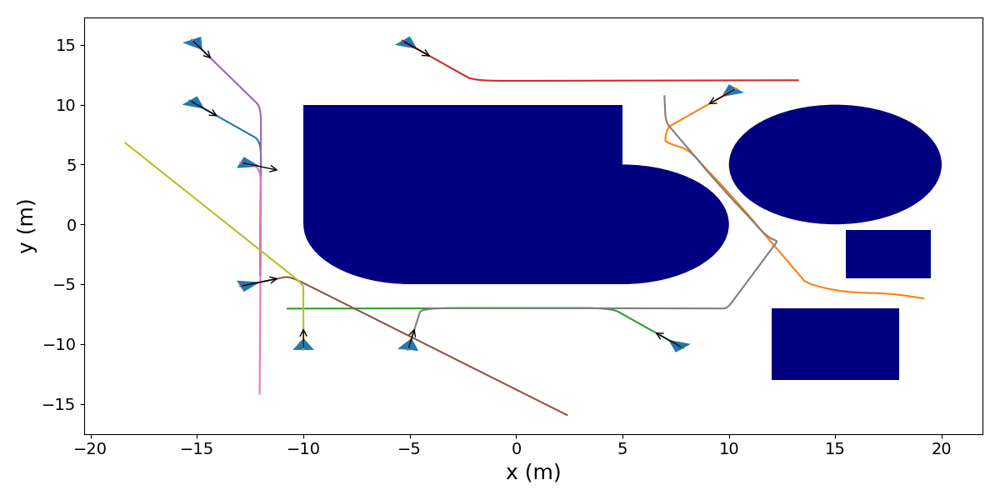
Mapping
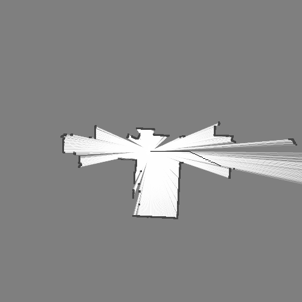
Uses Pose-Graph-based SLAM, A, and pure pursuit algorithm to get to a location.
Distance-based Navigation
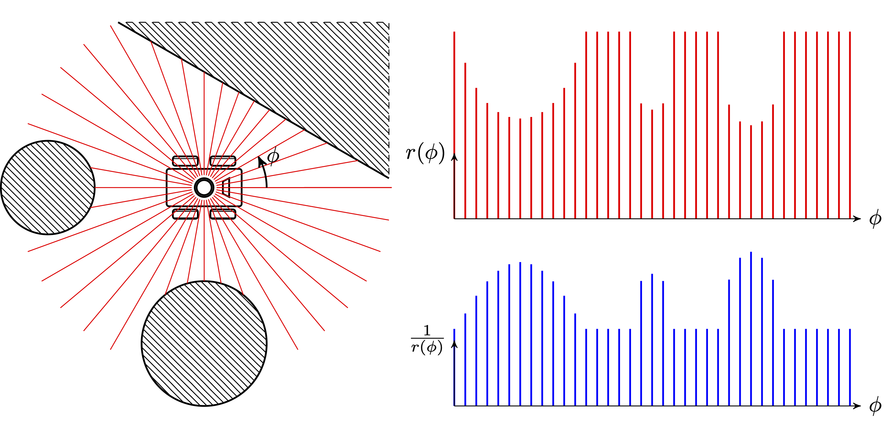
Object-aware Navigation
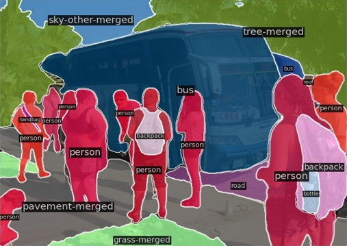
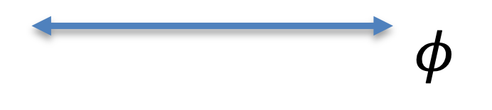
Replace with measure of object presence at
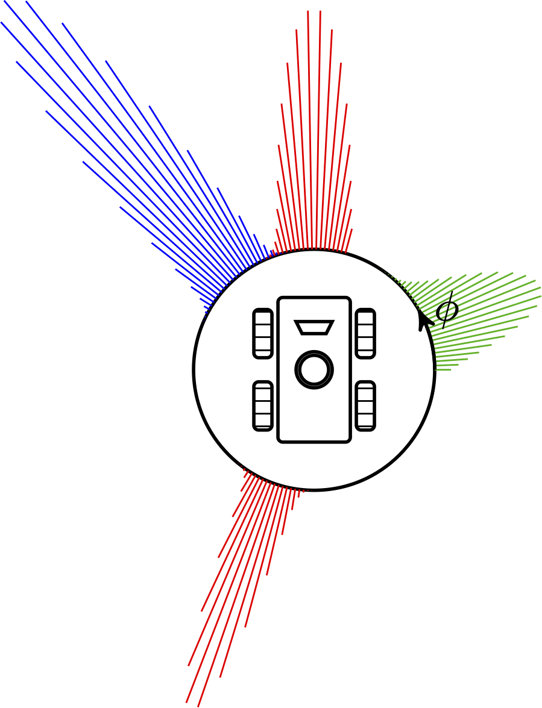
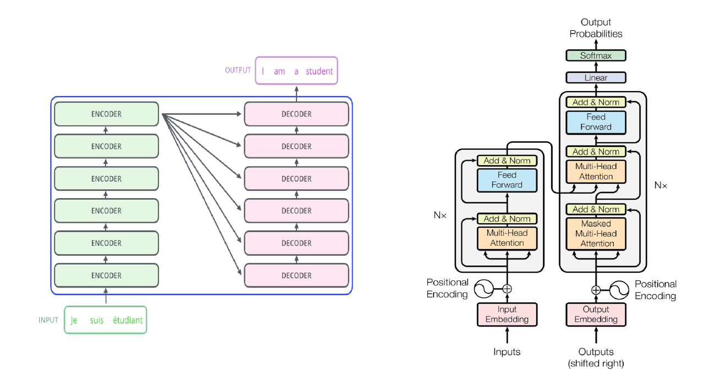
“Find bus below tree. Approach and help people getting on.”
Yolov9 Segmentation Model

Contact-Rich Manipulation
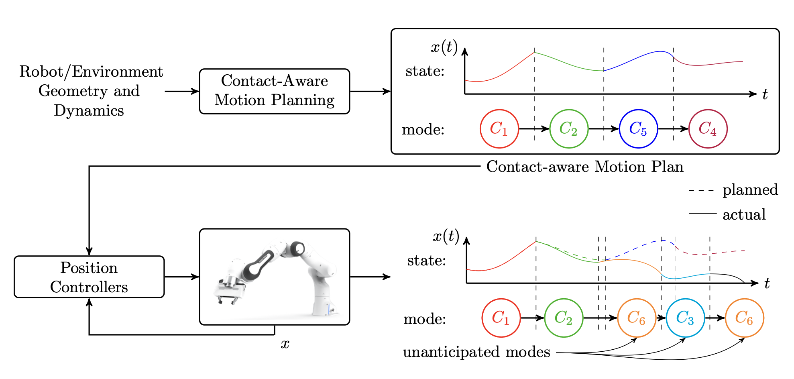
Contact-Rich Manipulation
Guided Policy Search
No guidance
Contact-Rich Manipulation
DL for Smart Sensors and Data

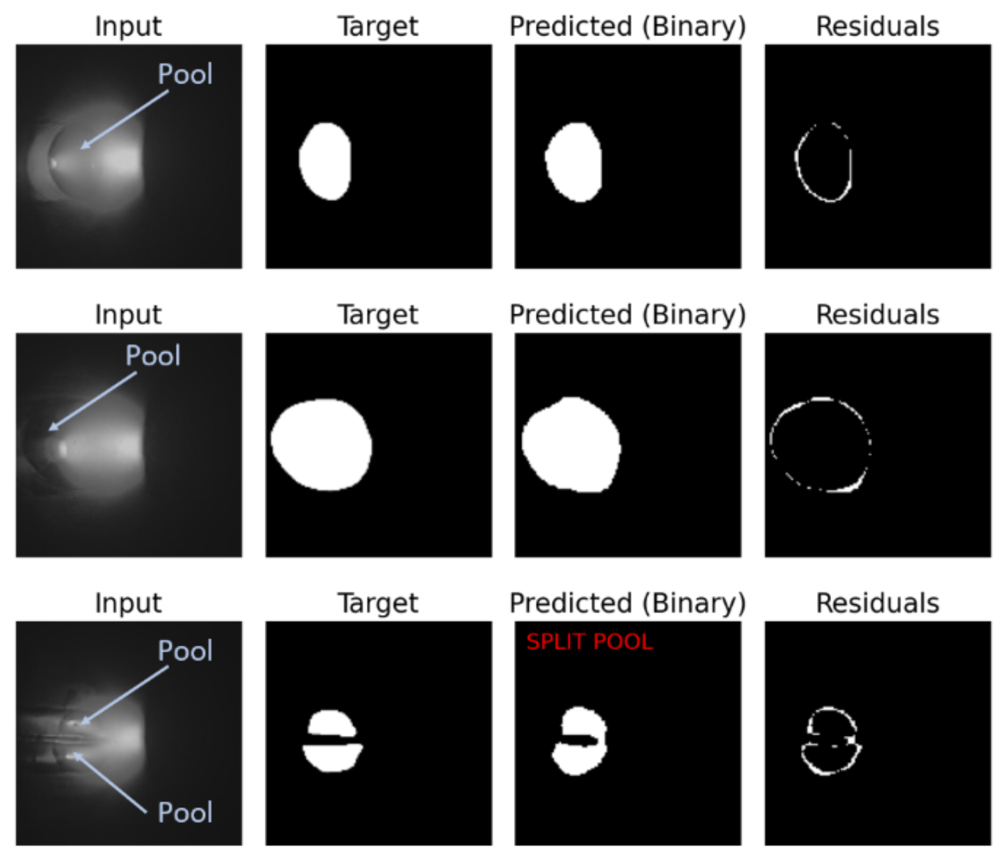


Tracking Robot Arms
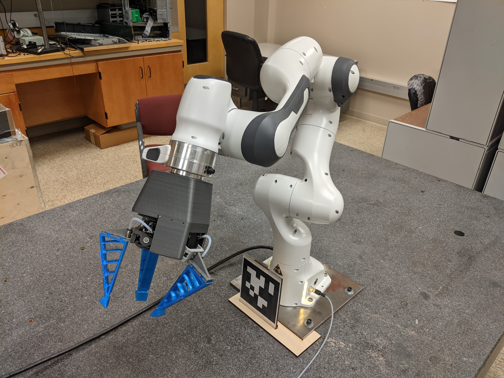
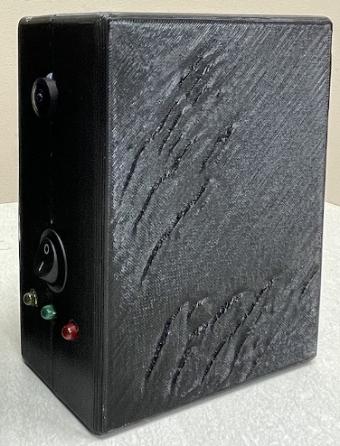
DREAM Model

DREAM Model

- 80 - 200 MB model depending on the backbone (VGG-X vs ResNet-X)
DREAM On Jetson Nanos
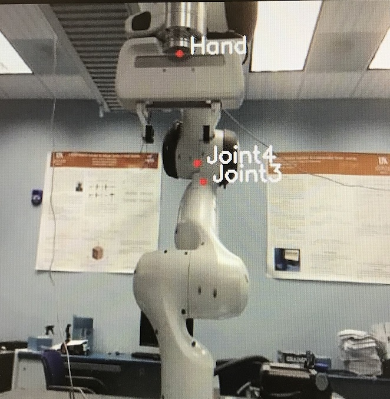
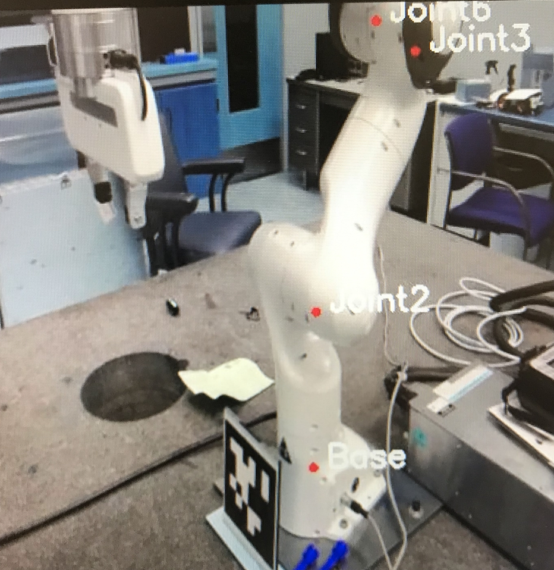
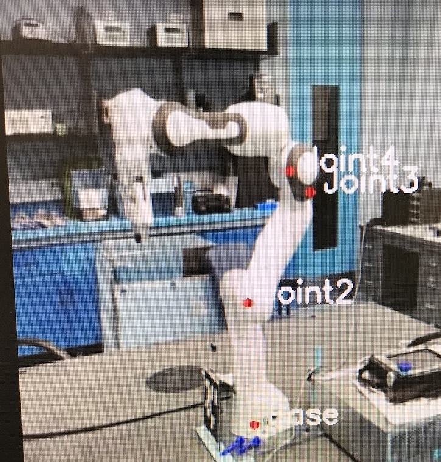
Robot Modeling and Control • ME 676 Home